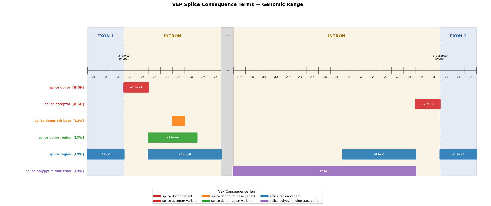

Consequence terms · variant classifications · annotation flowcharts

| Priority | Band | Consequence Term | Variant Classification | Splice Site Variant | Protein Change | Notes |
|---|
† Classification depends on variantType (DEL/INS) and isInframe. See Variant Classification Flow tab for the full logic.
Protein Change badges show one entry per possible output. Hover for source details.
p.M1? — ? is HGVS notation for "unknown protein effect": the start codon (Met1) is lost, but whether a downstream AUG creates a new ORF is uncertain. The ? passes through Stage 1 unchanged (not in the AA3TO1 table).
p.Edel (Stage 3 inframe deletion) — has no position number; only the ref AA(s) from the amino_acids field are available at that stage.
protein_altering_variant show both Missense and In_Frame protein changes?protein_altering_variant is a VEP catch-all term used when VEP cannot assign a more specific consequence.
Its default VARIANT_MAP entry is Missense_Mutation, but resolveVariantClassification()
overrides this for DEL/INS variants based on isInframe:| variantType | isInframe | Actual classification |
|---|---|---|
| SNV / other | any | Missense_Mutation (default) |
| DEL | true | In_Frame_Del |
| INS | true | In_Frame_Ins |
VariantClassificationResolver.java lines 137–145.
ProteinChangeResolver tries three stages in order and stops at the first non-null result:| Stage | Condition | Output format | Example | Notes |
|---|---|---|---|---|
| Stage 1 | VEP provides hgvsp |
p.{ref}{pos}{alt}fs*{N} |
p.L431Vfs*22 |
Full information: alt AA + stop-codon distance N come directly from VEP |
| Stage 2 | hgvsp absent; hgvsc present; amino_acids null |
p.*{n}fs* |
p.*536fs* |
Position computed from cDNA: (cPos+2)/3. No alt AA. No stop-codon distance (GN does not translate the frameshifted CDS). |
| Stage 3 | hgvsp absent; amino_acids present |
p.{ref}{pos}fs |
p.C536fs |
Ref AA and position from amino_acids/protein_start. No alt AA. No * at all — Stage 3 does not append it for frameshifts. |
VARIANT_MAP (VariantClassificationResolver.java) so that variant classifications can be resolved from them,
but they have no entry in EFFECT_PRIORITY (TranscriptConsequencePrioritizer.java).
This means they are never selected as the "highest-priority consequence" during transcript picking —
they only matter if they are already the sole consequence on a transcript.stopgain_SNV, nonframeshift_insertion) or simplified aliases
(e.g. splicing, upstream) from older annotation pipelines.
One is a typo: disrupting_inframe_deletion (should be disruptive_inframe_deletion).component/src/main/java/org/cbioportal/genome_nexus/component/annotation/VariantClassificationResolver.java
— bottom of initVariantMap(), lines 201 and 244–252.
These terms have no corresponding entry in TranscriptConsequencePrioritizer.java.
Source: VariantClassificationResolver.resolve()
Picks the best consequence term from the transcript (or intergenic consequences, or mostSevereConsequence),
then maps it to a MAF-style classification string. DEL/INS variants and the isInframe flag can override the map result.
Used in the logic above. VariantClassificationResolver.isInframe() — determines whether an indel preserves the reading frame.
Direct lookup table used in the final step above. Some entries have conditional overrides — see the flowchart. Terms marked † can produce different results depending on variantType and isInframe.
Source: ProteinChangeResolver.resolveHgvspShort()
Three stages are tried in order; the first non-null result wins. After all stages,
a VUE (Variant Update Engine) curated override may replace the value.
Applied when hgvsp is present and classification is not a splice variant. Source: AA3TO1 table in ProteinChangeResolver.java.
consequenceTerms.get(0). If frameshift_variant
is listed first (VEP orders by severity), a co-occurring splice_region_variant at index 1 is silently ignored —
Stage 2 returns null even for splice-site variants and falls to Stage 3.fs*3) is never computed.
VEP provides it in hgvsp when possible, but skips it for variants crossing the CDS/UTR boundary or
shifting into an intron — those fall to Stage 2/3 which emit only fs or fs* without distance.